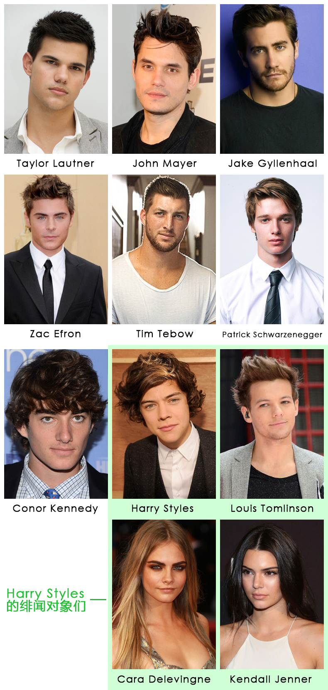

附录1 - 出场人物简介
主角组

Taylor Swift：本文第一女主，介绍略，正文中简称TS；
Dianna Agron：本文第二女主，演员，歌手，代表作：Glee，正文中简称DA；
Claire Winter Kislinger：她母亲开了一家名为Cathy Waterman的珠宝/时尚设计公司，她在该公司担任PR and Senior Accounts Director（公关与高级客户经理），自己也做一些设计；
Ashley Avignone：一开始是设计师助理，后来是设计师/时尚顾问，与娱乐圈很多明星相熟，比如TS、DA、Emma Stone等，乐意和她们一起玩，也乐意为她们牵线搭桥；
以上四人在2012-2013年常常一起出现，网友戏称为the Fantasy Four，正文中但凡4个人一起出现我就不打名字，简称她们为F4了（多接地气）
公关组

Paula Erickson：TS的前公关，从她出道就跟随左右，2014年3月中旬离开TS团队；
Tree Paine：TS的现公关，2014年4月10号正式宣布加入TS团队；
绯闻组
{kind=link}
（小狼之前的年代久远，且与本文无关，没有列进来）
Taylor Lautner：与TS共同参演电影< 情人节 >，09年10-12月传出绯闻；
John Mayer：09年底-10年初左右传出绯闻，除了音乐合作，没有被拍到任何私下一起的照片；
Jake Gyllenhaal：10年10月-12月，年底分手，11年1月疑似短暂复合又分手；
Zac Efron：共同为动画片< the Lorax >配音，12年初传出绯闻；
Tim Tebow：橄榄球运动员，12年3月同时与TS和DA传出绯闻，被认为是将TS和DA联系起来的纽带；
Patrick Schwarzenegger：阿诺.斯瓦辛格的长子，肯尼迪家的外孙，Conor的表兄弟，12年7月初TS和肯尼迪家族在一起过国庆节时与之传出绯闻随即被辟谣；
Conor Kennedy：肯尼迪家唯一男性继承人，12年7月国庆节与TS相遇，7月25号开始“交往”，8月19号后再未在一起，10月25号对外宣布早已“分手”；
Harry Styles：12年4月与TS传出绯闻，纯属谣言（炒作），已被官方辟谣；12年11月14号开始和TS“交往”，13年1月3号“分手”；
Louis Tomlinson：1D成员之一，即使他交女朋友、“喜当爹”，即使HS花花公子形象深入人心，Louis与HS的同性绯闻多年来从未断绝，为媒体津津乐道；
Cara Delevingne：12年7-9月，13年9月左右和HS“交往”，12年底-13年底Cara和Rita Ora在一起，Rita和CH在一起的时间是13年5月-14年6月，HS和Cara、Cara和Rita、Rita和CH这几段的时间都有重合，Cara和Rita后来都承认了她们的这段关系；Cara 14年初出柜；
Kendall Jenner：13年底和HS“交往”，15年底两人又传出绯闻，与HS的绯闻同时传出来的是Kendall也是Les的传闻（不妨搜一下Kendall和Lauren）；据说老佛爷看人眼光极好，被看中的模特全是弯的，恰好Kendall也是其中之一；
其他出场人员（按出场顺序）
Justin Bieber：12年4月初接受采访时说一个大明星觉得HS很hot，被传成TS觉得HS很hot，还被传成Justin邀TS和1D在他家开party，他们在一起游泳，都是误传；
Jessica Szohr：演员，Gossip Girls中的Vanessa，DA的多年好友，12年3月31号TS去DA家参加了Jessica的生日party；她参演了22的MV；13年5月27号和Hailee、Lena、Jack去TS罗德岛的家玩，那天之后TS和Jack写了I Wish You Would；
Charity Baroni：TS的红发伴舞；
Dakotah Rae：Hayley Williams（坏血MV中的The Crimson Curse）的BFF，也经常和TS一起玩，12年4月27给TS做了一条剪刀项链；
Roxy Olin：演员，Claire的好朋友，2012年国庆节和F4一起去Hyannis Port玩；
Marisha Mae Wagner：音乐人，TS在Nashville的好朋友，参演了22的MV；
Chelsea Lankes：音乐人，TS在Nashville的好朋友，参演了22的MV；
Sarah Barlow：摄影师，TS在Nashville的好朋友，为TS拍摄RED专辑、单曲的封面、内页，参演了22的MV；
Addison Timlin：演员，DA的多年好友，参演了22的MV；
Jessica Stam：模特，DA的好朋友，12年12月6号和TS、DA、Emma Stone等一起吃饭聚会合影，照片挂在RED Club照片墙上；
Kelly Straw：DA的好朋友，12年12月6号和TS、DA、Emma Stone等一起吃饭聚会合影，照片挂在RED Club照片墙上；
Tavi Gevinson：96年出生，知名少女时尚博主，并为多家杂志撰文， 13年6月她写了一篇力挺TS的文章，DA在推特上关注了她；7月国庆节TS邀她去罗德岛玩，7月底还一起划船；TS之后也多次请Tavi到她家玩，比如15年1月在家中做饭，15年2月抱狗合影等；2015年6月刊ELLE对TS的采访就是Tavi Gevinson写的；
Sarah Hyland：13年9月4号TS、DA和Sarah以及她当时的男友Matt Prokop一起看Fun乐队演出，她后来的男友Dominic Sherwood出演了Style的MV；